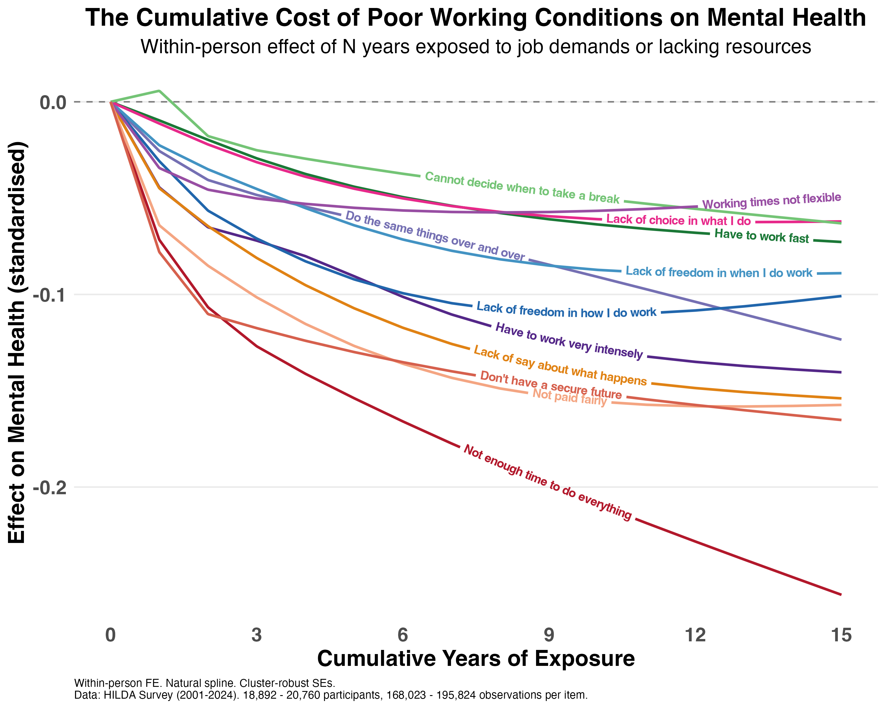

Psychosocial safety practitioners and researchers have known for a while that poor working conditions can cause psychological harm. But these effects often aren't immediate. It takes time for exposure to excessive demands or inadequate resources to impact mental health.
So how long does it take?
To answer this question, I used data from over 20,000 people working in Australia between 2001 and 2024, measuring how cumulative years of exposure to specific job demands and missing resources predicts mental health.
The plot below shows the "dose-response" curve of each demand or missing resource I looked at. Here's what I found:
1) Even a single year of exposure leads to a decline in mental health in most cases. But continued exposure makes it much worse. For many conditions, 5 years of exposure roughly doubles the impact of one year.
2) The biggest cumulative driver of declining mental health was the sense of not having enough time to do everything in your job. Interestingly, this isn't necessarily about needing to work fast. It's about being asked to do more than you can achieve in normal hours.
3) Missing resources matter just as much as excessive demands. Not being paid fairly, lacking job security, and having no say in decisions were the next strongest drivers of declining mental health.

What does this mean for practice?
These results suggest that duration of exposure to psychosocial risk factors can matter just as much as severity. Every year someone sits in a high-demand, low-control role, the harm compounds. A "moderate" hazard that's been present for 8 years isn't moderate. Duration should be part of the conversation.
And the front-loading of effects suggests early intervention is important. The first few years of exposure are where the steepest declines happen. That's the window where changes to how work is designed and distributed can make the biggest difference.